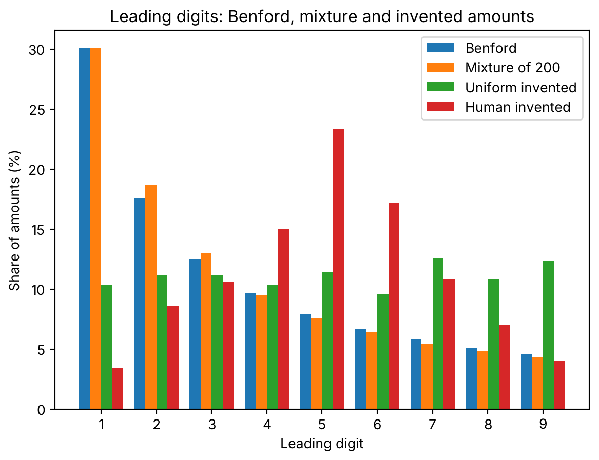

import numpy as np
import matplotlib.pyplot as plt
digits = np.arange(1, 10)
def first_digit(x):
# Leading digit of positive numbers, via the exponent of 10
x = np.asarray(x, dtype=float)
return (x // 10 ** np.floor(np.log10(x))).astype(int)
def digit_table(x):
# Share of each leading digit, in percent
counts = np.bincount(first_digit(x), minlength=10)[1:]
return 100 * counts / counts.sum()Amounts nobody designed to follow Benford’s law still do, once you mix enough of them
probability
simulation
python
Pile up amounts from many unrelated sources and the leading digit settles on 30% ones. A simulation shows it happening, and what that means for spotting invented numbers.
Take 200 different processes that produce money amounts. None of them is built to favour any digit.
Pile their outputs into one column and count the first digits. About 30% of the amounts start with a 1. About 5% start with a 9.
Nobody put that there. It shows up on its own. And once you see why, you also see when to trust it.
What the law says
Benford’s law gives the share of amounts that start with digit \(d\):
\[P(d) = \log_{10}\left(1 + \frac{1}{d}\right)\]
In words: the 1 gets \(\log_{10} 2 \approx 30.1\%\), and the share shrinks all the way down to the 9. Here it is, digit by digit.
benford = 100 * np.log10(1 + 1 / digits)
def max_gap(table):
# Largest absolute difference from Benford, in percentage points
return np.abs(table - benford).max()
def show(name, table):
print(f"{name:>10}: " + " ".join(f"{v:5.1f}" for v in table) + f" max gap {max_gap(table):4.1f} pp")
print("digit : " + " ".join(f"{d:5d}" for d in digits))
show("Benford", benford)digit : 1 2 3 4 5 6 7 8 9
Benford: 30.1 17.6 12.5 9.7 7.9 6.7 5.8 5.1 4.6 max gap 0.0 ppOne source does not follow it
Take a single source. Say 500 invoices from one kind of job, centred around 400 euros with not much spread. A lognormal with \(\mu = 6\) and \(\sigma = 0.4\) does the job.
np.random.seed(42)
single = np.random.lognormal(mean=6, sigma=0.4, size=500)
single_table = digit_table(single)
show("single", single_table) single: 4.0 20.6 24.4 23.4 14.4 5.4 4.4 1.8 1.6 max gap 26.1 ppNot even close. Only 4% of the amounts start with a 1, and 24% start with a 3. The largest gap from Benford is 26 percentage points.
That makes sense. All the amounts live in a narrow band, and which digit leads depends on where the band sits.
Mix 200 sources
Now I build 200 sources like that one, but each with its own centre and its own spread, drawn at random. Some produce amounts in the tens, some in the tens of thousands. Some are tight, some are wild. 500 amounts from each.
np.random.seed(42)
n_dist, n_each = 200, 500
mus = np.random.normal(5, 2, size=n_dist)
sigmas = np.random.uniform(0.3, 2.0, size=n_dist)
batches = [np.random.lognormal(m, s, size=n_each) for m, s in zip(mus, sigmas)]
mixture = np.concatenate(batches)
mixture_table = digit_table(mixture)
print(len(mixture), "amounts")
show("mixture", mixture_table)100000 amounts
mixture: 30.1 18.7 13.0 9.5 7.6 6.4 5.5 4.8 4.4 max gap 1.1 ppLook at the row. 30.1% ones, 18.7% twos, 4.4% nines. The largest gap from Benford is 1.1 points.
Many of those 200 sources are narrow, and a narrow source does not follow the law on its own. Pile up sources whose scales have nothing to do with each other, and the pile does.
This is the idea behind a 1995 result by Ted Hill. Roughly: if you pick distributions at random, in an unbiased way, and then sample from each, the leading digits of the whole pile converge to Benford’s. I have only read the statement, not the proof, so for the exact conditions, go to his paper. What I can show you is how it looks.
It does not arrive in a straight line
You’d expect the gap to shrink every time you add a source. Let me check.
for k in [1, 5, 20, 50, 200]:
t = digit_table(np.concatenate(batches[:k]))
print(f"{k:>3} distributions: max gap {max_gap(t):5.2f} pp") 1 distributions: max gap 1.81 pp
5 distributions: max gap 0.77 pp
20 distributions: max gap 0.50 pp
50 distributions: max gap 1.55 pp
200 distributions: max gap 1.11 ppIt doesn’t. With 20 sources the gap is 0.5 points. With 50 it goes back up to 1.55. With 200 it sits at 1.1.
The first source alone is already at 1.8 points. It happens to be a wide one, with \(\sigma = 1.8\). A source that spreads over several orders of magnitude gets there by itself. The one I used before, with \(\sigma = 0.4\), was nowhere near.
Also, this is one run with one seed. I’d read the table as “after a handful of wide sources you are within a point or two, and it hovers there”, not as a convergence curve. I’m not going to promise it falls smoothly.
Invented amounts
Here is the part you actually use this for. Someone has to fill a table with five hundred invoices that never existed, and they pick amounts that look plausible, between 100 and 999.
The simplest case is a uniform pick. A second case is closer to what I’d expect from a person: they avoid starting with 1 and lean towards the middle digits. That second one is my own model, with weights \(1, 2, 3, 4, 5, 4, 3, 2, 1\) on the leading digit. It is not data from real people.
np.random.seed(42)
uniform = np.random.randint(100, 1000, size=500)
uniform_table = digit_table(uniform)
# "Human" version: middle digits are favoured when picking a number
weights = np.array([1, 2, 3, 4, 5, 4, 3, 2, 1], dtype=float)
lead = np.random.choice(digits, size=500, p=weights / weights.sum())
human = lead * 100 + np.random.randint(0, 100, size=500)
human_table = digit_table(human)
show("uniform", uniform_table)
show("human", human_table) uniform: 10.4 11.2 11.2 10.4 11.4 9.6 12.6 10.8 12.4 max gap 19.7 pp
human: 3.4 8.6 10.6 15.0 23.4 17.2 10.8 7.0 4.0 max gap 26.7 ppThe uniform pick is flat: every digit around 10% to 12%. The “human” one peaks at the 5, with 23%. In both cases the 1 gets far less than the 30% it should.
Here are all four side by side.
width = 0.2
fig, ax = plt.subplots()
ax.bar(digits - 1.5 * width, benford, width, label="Benford")
ax.bar(digits - 0.5 * width, mixture_table, width, label="Mixture of 200")
ax.bar(digits + 0.5 * width, uniform_table, width, label="Uniform invented")
ax.bar(digits + 1.5 * width, human_table, width, label="Human invented")
ax.set_xticks(digits)
ax.set_xlabel("Leading digit")
ax.set_ylabel("Share of amounts (%)")
ax.set_title("Leading digits: Benford, mixture and invented amounts")
ax.legend()
plt.show()
The first two bars of each group almost sit on top of each other. The other two don’t.
When to use it and when to leave it
Say your column mixes many sources with different scales: invoices from many clients, expenses from many departments. Then Benford is a sensible baseline. A column that departs from it in the first digit deserves a look.
If your column comes from one narrow source, it will not follow the law, and nobody cheated. My first lognormal, with 500 perfectly honest amounts, was 26 points away.
There is a second trap, and it points the other way. With enough rows, a chi-square test will reject Benford for almost any real table, because it detects tiny gaps. The same thing happens with a coin that lands heads 51% of the time: given enough flips the test rejects it (in Spanish). A million invoices and a p-value of 0.0001 tell you the gap is not exactly zero. How big it is, you have to measure yourself.
So the next time you check a table against Benford, ask first where the amounts come from. If they come from many places, the law is the null you want. Then look at how big the gap is, in points, before you look at the p-value.